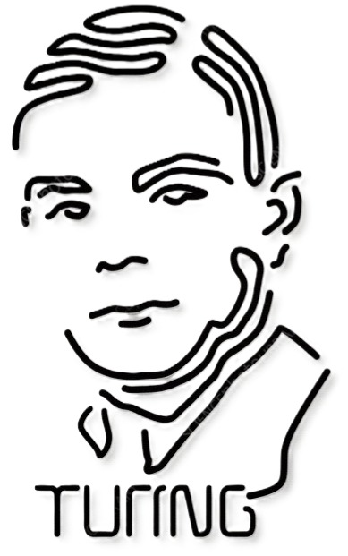

Projects & Contributions
Explore the groundbreaking work and ideas of
Alan Turing that laid the foundation of modern
computer science and artificial intelligence.

Featured Projects

The Turing Machine
1936
a theoretical model of computation introduced by Alan Turing in his paper On Computable Numbers. Although it was never built as a physical machine, it became the foundation of modern computer science.
Learn More
Automatic Computing Engine (ACE)
1945
a pioneering electronic stored-program computer designed at the UK's (NPL). While the full-scale ACE was never built, a smaller trial version, the Pilot ACE, became operational in 1950,paving the way for modern computing architecture.
Learn More
The Bombe Machine
1940
a electromechanical code-breaking machine created by cryptologists in Britain during World War II to decode German messages that were encrypted using the Enigma machine.
Learn More
The Turing Test
1950
a thought experiment proposed to evaluate if a machine can exhibit intelligent behavior indistinguishable from a human.
Learn More
Morphogenesis Research
1952
in "The Chemical Basis of Morphogenesis", Alan Turin proposed that biological patterns like animal spots and stripes arise through reaction-diffusion systems.
Learn MoreA Timeline Of Innovation
“Sometimes it is the people no one can imagine anything of who do the things no one can imagine.” ― Alan Turing